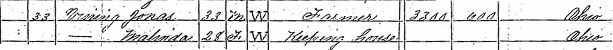
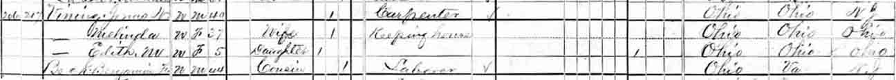
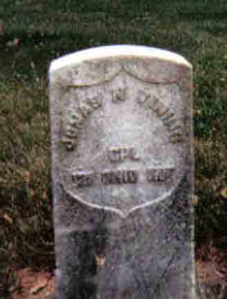
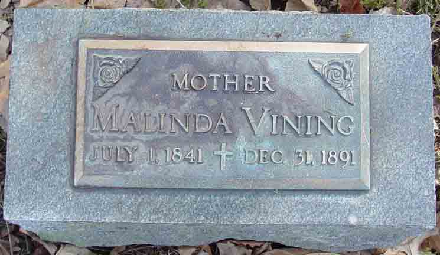

Census Data
| 1870 | 1880 | 1890 | 1900 | 1910 | 1920 | 1930 | |
| Jonas N. Vining | 33 | 40 | ? | 61 | 72 | ? | ? |
| Malinda (Bowen) Vining | 28 | 37 | ? | dead | |||
| Sarah A. "Nancy" (Columbes) Vining | 44 | 52 | ? | ? | |||
| Edith M. Vining | 5 | ? | not living in this household | not living in this household | ? | ? | |
| Leo Nelson Vining | 3 | 13 | ? | ? | |||
| Lloyd Ozias Vining | 8 m. | 10 | ? | ? |


Death Data
Gravestone for Jonas N. Vining, in Oakdale Cemetery, Marysville, Union County, Ohio (from Find A Grave):
